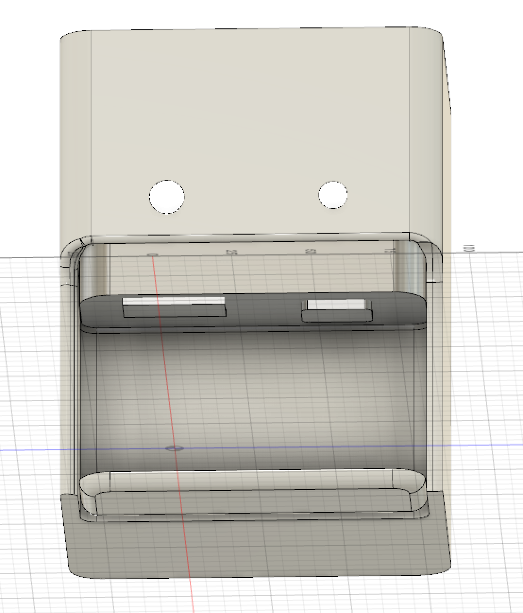
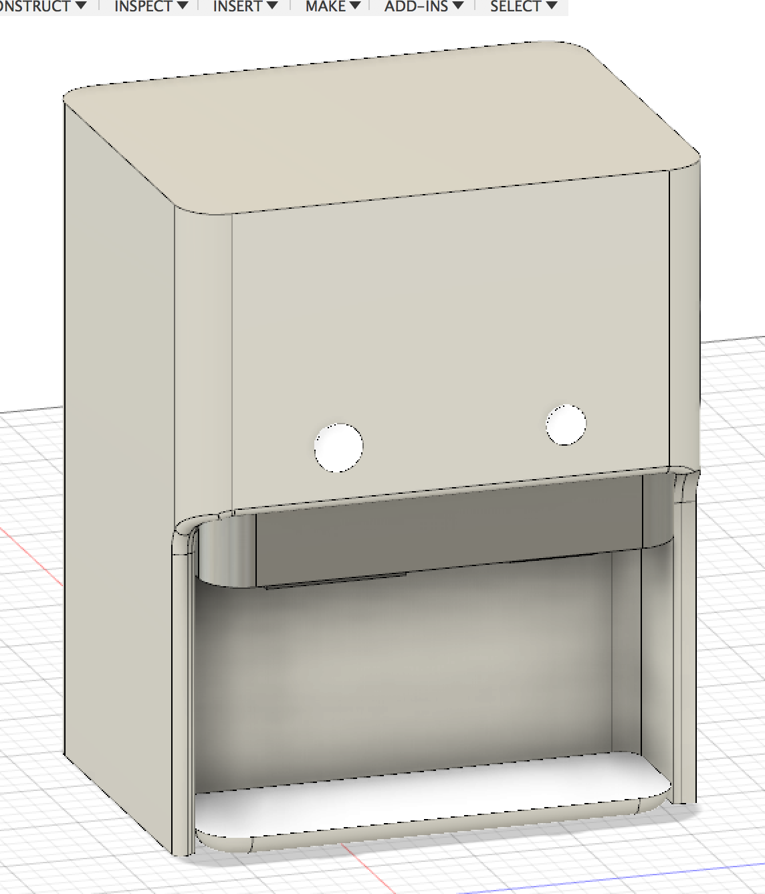
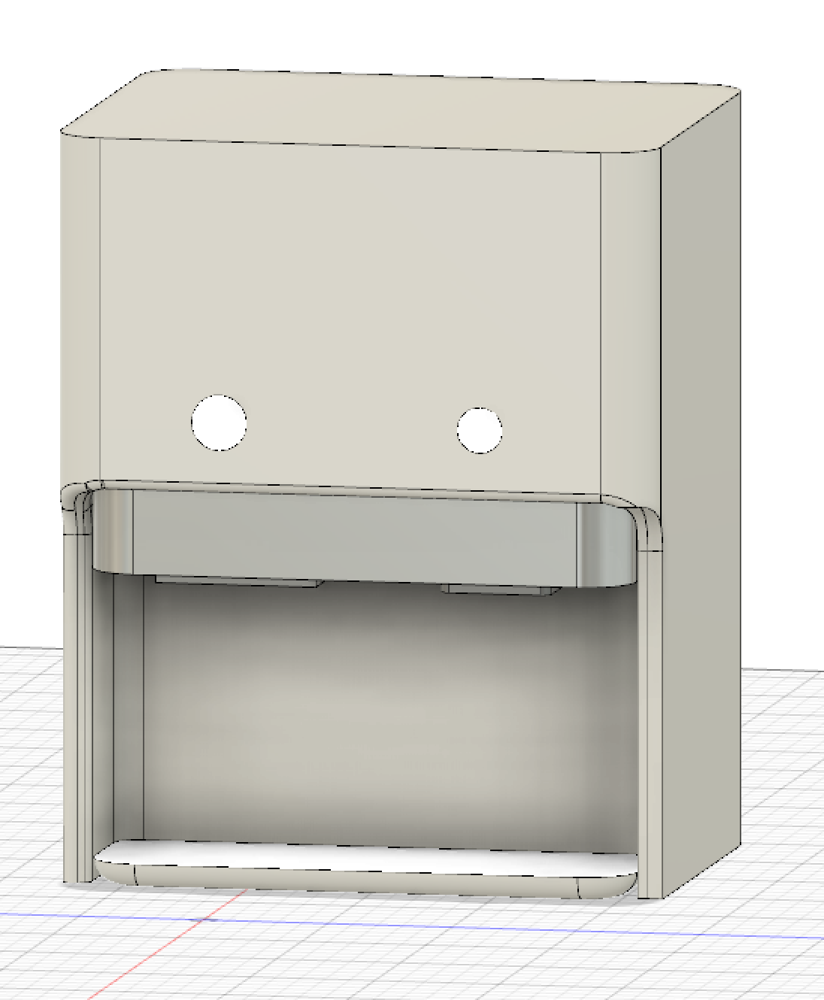

教室に置きたいもの
「教室に必要なもの」
教室に浄水器を置きたいと思ったのは、水分補給が足りないと思ったからだ。
学食に浄水器が置いてはあるが、みんなほぼお茶だけを飲む。
教室に置けるサイズの浄水器があったら、みんなの水分補給にやくたつはずだ。
「AutodeskFusionで浄水器を作成」
浄水器を３d作成して見た。
コンパクトなサイズの浄水器を３d作成



作成後、素材や色を変えて見た。
クロステック教室の後ろ、プリンターの横におけると思う。